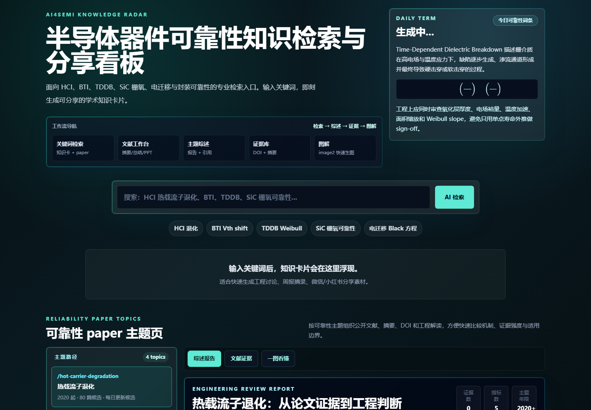
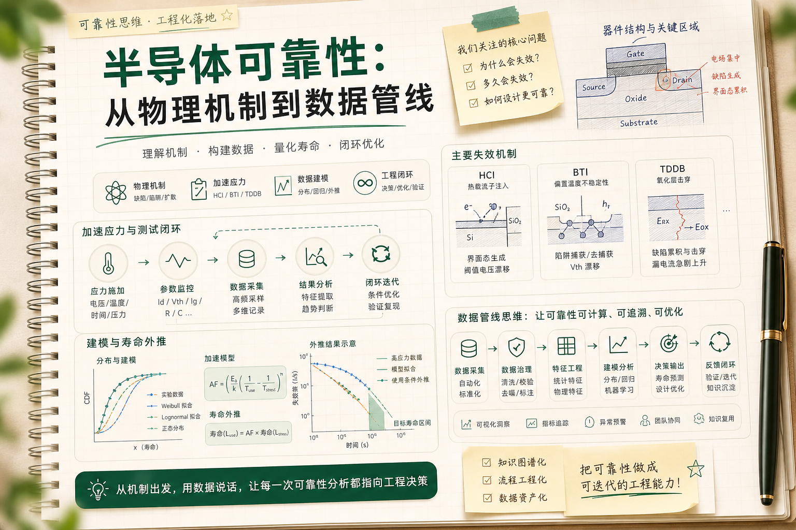

Reliability Knowledge Radar
半导体器件可靠性知识检索与分享看板
面向 HCI、BTI、TDDB、SiC 栅氧、电迁移与封装可靠性的专业检索入口，目前在 Cloudflare Workers 线上版本中持续优化。


展示重点
这个项目体现的是 AI 辅助编程与知识产品化能力：不只是整理资料，而是把工程师日常会反复检索、综述、查证和图解的内容做成可持续更新的知识底座。
Reliability Knowledge Radar
面向 HCI、BTI、TDDB、SiC 栅氧、电迁移与封装可靠性的专业检索入口，目前在 Cloudflare Workers 线上版本中持续优化。


这个项目体现的是 AI 辅助编程与知识产品化能力：不只是整理资料，而是把工程师日常会反复检索、综述、查证和图解的内容做成可持续更新的知识底座。